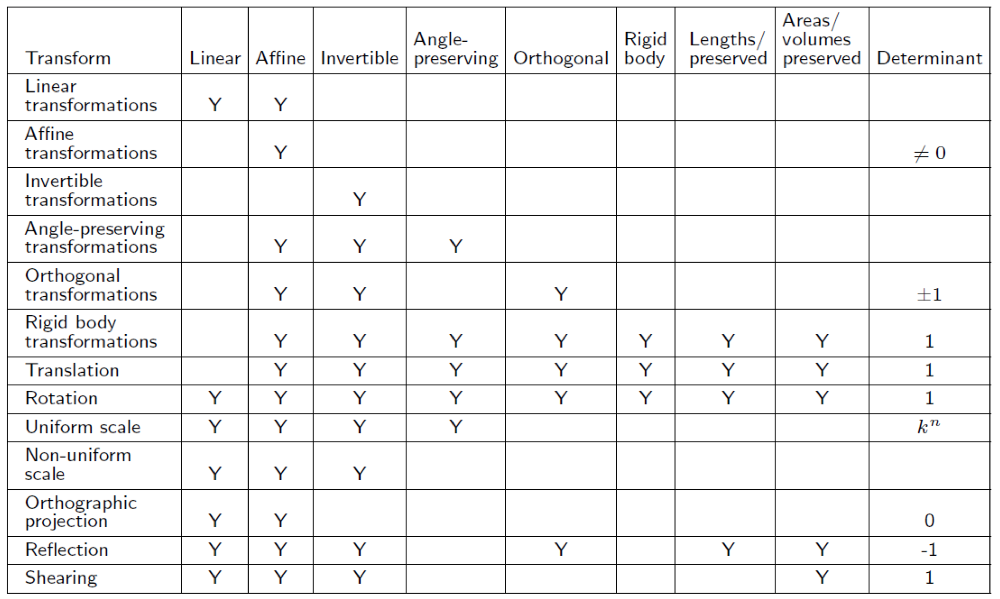

Matrix Linear Transformations
Types of Transformations
Linear Transformations
Linear if preserves addition/multiplication by scalar:
$F(a+b) = F(a)+F(b)$
$F(ka) = kF(a)$
Linear Transformations
$F(a) = aM$, when $M$ is square is linear:
$F(a+b) = (a+b)M = aM + bM = F(a) + F(b)$
$F(ka) = (ka)M = k(aM) = kF(a)$
Linear Transformations
Any linear transform will transform zero vector into zero vector:
if $F(0) = a, a\neq 0$, then $F$ is not linear because
$F(k0) = a$, so $F(k0) \neq kF(0)$
Thus translation is not a linear transformation.
Affine Transformations
Linear transformation followed by translation.
Any linear transformation is an affine translation, but not all affine
transformations are linear transformations.
All transformations from episodes up to now are affine transformations
Form $v^\prime = vM + b$ is an affine transformation.
Invertible Transformations
If there is another opposite transformation that "undoes" the original
transformation, then it is invertible.
$F^{-1}(F(a)) = a$ for all $a$
All transformations thus far, other than projection (3d -> 2d) can be undone
If a matrix is singular (has no inverse), then it is non-invertible.
Angle-preserving Transformations
Considered angle-preserving if angle between 2 vectors not changed
in magnitude or direction after transformation.
Only Translation, rotation, and uniform scale transformations
Reflection not considered becasuse direction of angle may be inverted.
Orthogonal Transformations
More later.
Axes remain perpendicular, no scalars applied.
Translation, rotation, and reflection only orthogonal transforms.
Lengths, angles, areas, and volumes preserved.
Determinant is +/-1.
Afffine and invertible.
Rigid Body Transformations
Changes location and orientation, but not shape.
Angles, lengths, areas, and volumes preserved.
Not reflection.
"Proper" transformations.
Orthogonal, angle-preserving, invertible, affine.
Determinant of rotation matrix is 1.
Summary of Transformations
